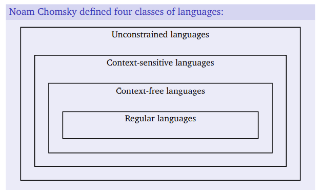

Lecture 2: Syntax
Paradigms of Programming
What is a programming paradigm?
- Style of programming, the way in which solutions to problems are implemented in a programming language.
- Involves extensive use of some constructs of a language and discourages or prohibits the use of others.
Imperative Programming
- A program is a sequence of statements.
- Statements update the state of variables etc.
- Closely related to the language of the underlying hardware — usually some version of von Neumann/register machine.
Examples: Fortran, Algol, Cobol, Pascal, C, ...
Object-oriented Programming
- A program defines a set of objects that are encapsulations of data and operations (methods).
- Models of entities in real world?
- Separation of class and instance.
- Separation of state (attributes/properties) and behaviour (methods/features).
- Objects send messages to (call methods on) each other.
- Objects execute operations when they receive messages.
Examples: Simula, Java, C++, C#, Ruby, Smalltalk, ...
Functional Programming
- A program defines a set of functions.
- Functions, when called with appropriate arguments, compute values based on the input.
- Functions are first-class objects: they can be both arguments to and return values from calls to other functions.
- In pure functional programming there are no side-effects—variables are not mutable variables, there is no I/O.
Examples: Haskell, Lisp, Scheme, ...
Logic Programming
- A program is a set of logical assertions: facts and rules.
- A program may be read as a logical expression or as a set of operations to be executed.
- An execution of a program follows an inference pattern to prove or disprove a query.
Examples: Prolog, Datalog (deductive databases), Mercury, OWL, Semantic Web languages, ...
The CTMCP* Approach
*Concepts, Techniques, and Models of Computer Programming — the book
The kernel language approach
- Start with a simple model of computation, a kernel language (KL).
- The KL has a simple syntax and intuitive, virtual machine-based semantics.
- Incrementally extend the KL with new features to add support for further paradigms.
- At each step, assess the benefits and drawbacks of the extensions.
Some of the features discussed in CTMCP
- Functions, procedures
- Higher-order
- Dataflow
- Lists
- Records
- Pattern matching
- Declarativity
- Concurrency
- Lazy evaluation
- Streams
- Explicit state
- Encapsulation
- Inheritance
- Non-determinism
mdc, The Micro dc
A Specification
Programs in mdc may include any number of:
- arbitrary positive integer numerals;
- arithmetic operators—any of +, -, *, and /;
- stack display commands—any of p and f.
... but nothing else.
Unlike dc, our mdc has just one stack, the main stack. mdc works as follows:
- It takes elements from the program one at a time.
- If the current element is a numeral, it is pushed onto the stack.
- If the current element is an arithmetic operator,
- two values are popped from the stack,
- the appropriate arithmetic operation is applied, and
- the result is pushed onto the stack.
- If the current element is the p or the f command, the topmost element or all elements (in a top-down order) are displayed, respectively.
This is an informal specification of the semantics of mdc. We shall use this sort of specification throughout the course, and discuss other options at one of the last lectures.
Steps in executing an mdc program
- Reading the input. The input is a sequence of characters provided as an argument to mdc or read from a file or from the console (stdin).
- Parsing the input. The sequence of characters is processed in order to identify and classify syntactic elements, and an internal representation of the input is built.
- Interpreting the input. The internal representation of the program is processed, i.e., the actions specified by the syntactic elements are performed.
Specifying a Programming Language
The definition of a programming language involves (at least) a specification of its syntax and semantics.
Syntax: Definition of the form of programs in a language. Specifies which sequences of symbols are valid (are programs), and which are not.
Semantics: Definition of the meaning of programs in a language. Specifies what the computer has to do during an execution of a program.
Formal Language
A formal language is a set of strings (sequences) of symbols from a finite alphabet :
Example (Formal language)
- is the empty string (the string of no symbols)
- The sequence abc is not a valid sentence
Formal Grammars
How can we specify syntax formally?
- We can use a formal grammar.
- A formal grammar specifies how to construct (derive, generate) a string that is syntactically valid (i.e., a string that belongs to the language defined by the grammar).
- If a particular string cannot be generated from a grammar, it is not a valid sentence in the formal language defined by the grammar.
Definition (Formal grammar) A formal grammar is a -tuple , where:
- is a finite set of variables (non-terminals)
- is a finite set of symbols (terminals)
- is a finite set of rules (productions)
- is the start variable (root, top)
Backus-Naur Form
BNF Notation
- Grammars are usually written using a special notation: the Backus-Naur Form (BNF).
- BNF is often extended with convenience symbols to shorten the notation: the Extended BNF (EBNF).
- BNF (and EBNF) is a metalanguage, a language for talking about languages.
- We will use EBNF extensively during the course.
Elements of BNF
- Terminals are distinguished from non-terminals by some typographical convention, for example:
- non-terminals are written in italics, using angle brackets, etc.;
- terminals are written in a monotype font, enclosed in quotation marks, etc.
- Rules are written as strings which contain:
- a non-terminal,
- a special symbol (typically, '::='),
- a sequence of terminals and non-terminals, or the symbol 'ϵ'.
- The terminals and non-terminals of the defined grammar are those explicit in the rules (except for 'ϵ' and other special symbols).
- The start variable is the left-hand side of the top-most rule in the grammar.
Derivations
- Following the rules of using a grammar explained earlier, we can derive strings given a grammar in a sequence of steps (a derivation).
- In each step we derive a new sentential form — a sequence of terminals and non-terminals.
- The first sentential form is the start variable alone.
- The last sentential form is a valid sentence, composed only of terminals.
Further extensions
- The special symbol '|' has the meaning of 'or'.
- Use the special symbols '[' and ']' to enclose a subsequence that appears in the string at most once.
- Use the special symbols '{' and '}' to enclose a subsequence that appears in the string any number of times.
- Alternatively, use only the symbols '{' and '}' and a superscript to specify the number of occurences. Typically, '+' means at least one occurence, and '*' means any number of occurences.
Classification of Grammars
Chomsky's Hierarchy of Languages

Regular Languages
What is a regular language?
-
A language generated by a regular grammar.
-
In a regular grammar, all rules are of one of the forms:
v ::= s w v ::= s v ::= ϵwhere v, w are any variables in V and s is any symbol in S. (These are right-regular grammars; in left-regular grammars the right-hand side of the first rule has inverse order.)
Context-free Languages
What is a context-free language?
-
A language generated by a context-free grammar.
-
In a context-free grammar, all rules are of the form:
v ::= γwhere v is a variable in V and γ is any sequence of variables and symbols from V ∪ S.
Context-sensitive Languages
What is a context-sensitive language?
-
A language generated by a context-sensitive grammar.
-
In a context-sensitive grammar, all rules are of the form:
αvβ ::= αγβwhere v is any variable from V, and α, β and γ are any sequences of variables and symbols from V ∪ S.
Recursively Enumerable (Unrestricted) Languages
What is a recursively enumerable language?
-
A language generated by an unrestricted grammar.
-
In an unrestricted grammar, all rules are of the form:
α ::= βwhere and are any sequences of variables and symbols from ( is non-empty).
Why do we care?
- Different grammars have different computational complexity: unrestricted context-sensitive context-free regular
- Regular grammars are used to define the lexemes of a programming language, i.e., sequences of symbols from the alphabet of individual characters.
- Context-free grammars are used to define programs, i.e., sequences of symbols from the alphabet of individual lexemes in a programming language.
- Additional constraints may be needed to further define the language, e.g., by specifying that variable identifiers can be used only after they have been declared, etc.